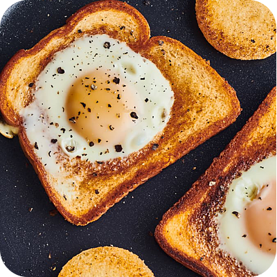

Eggs in a Basket

DESCRIPTION
Out of all the ways to prepare eggs, none are as playful as eggs in a basket.
There’s just something magical about an egg cooked inside a piece of toast that
can instantly brighten any morning. And did I mention they also taste really,
really good?
As simple as this dish is to make, there are a few techniques that will
help you achieve a perfectly cooked egg inside a golden, buttery slice
of toast every time. Here’s everything you need to know.
Garnish your eggs with fresh chives, then serve with classic breakfast fare:
bacon, orange juice, and plenty of coffee. A bottle of hot sauce would be a
good addition, too!
INGREDIENTS
- 2 slices hearty sandwich bread
- 3 tablespoons unsalted butter
- 2 large eggs
- Kosher salt
- Freshly ground black pepper
- Chopped fresh chives, for garnish (optional)
STEPS
-
Cut out the centers of 2 slices sandwich bread. Reserve the centers.
-
Melt 3 tablespoons unsalted butter in a large nonstick skillet over
medium-low heat. Swirl the pan as the butter melts to evenly coat the
entire surface. You don’t want to brown the butter — just melt it.
The pan is ready when the butter just starts to sizzle.
-
Toast the bread. Add the bread slices with the centers cut out, then nestle
the bread rounds next to them. Cook until the bread is toasted and light
golden-brown on the bottom, 3 to 4 minutes.
-
Add the eggs.
-
Season the eggs with kosher salt and several grinds of black pepper.
-
Cover the pan and cook until the egg whites are fully set, the yolk is
still runny, and the other side of the bread is golden-brown. Serve
immediately.
HOME